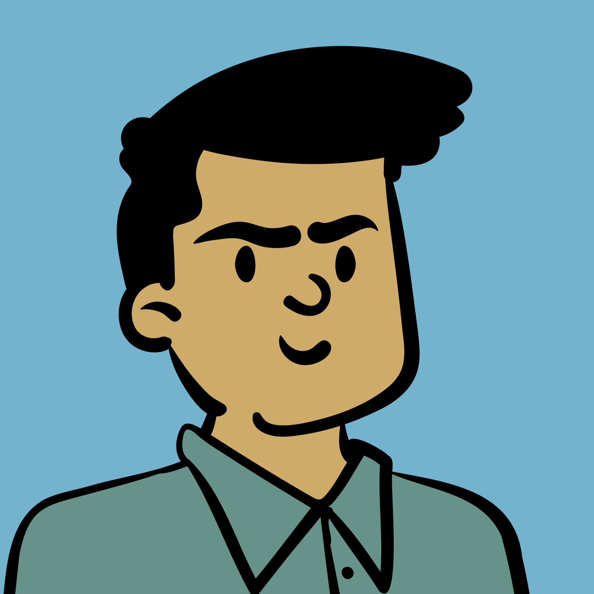

Yashab.
I build software solutions to help make the world more accessible.
About Me
In 2020, I graduated with a BS in Computer Science from California State University, Fullerton.
Since June 2022, I've been working as a Software Engineer at Yardi Systems. Besides my career, I love creating side projects like Bonk Bot, a discord bot that adds fun to interactions by making randomized sounds in voice channels.
Outside of coding, I enjoy walks with my dog, gym sessions, and trying new food. I am all about balancing growth and joy, and living life to the fullest.
Experience
Yardi Systems Inc. | Software Development Engineer I June 2023 - Present
I contribute to the development of a web application for Invoice and Email Processing. I have designed pages using Angular and used SQL Server queries to generate reports, and utilized Amazon S3 for storing invoices and facilitating file uploads. Additionally, I integrated Microsoft Exchange Server and SMTP protocols for efficient email processing and confirmation.
—
Yardi Systems Inc. | Summer Internships 2017/2018
Got hands on experience with Relational Databases in the work force while working on Yardi Marketplace and Vendor Cafe. Fixed and improved issues brought up by employees and clients with integrated MySQL queries within XML files.
—
Meme City Pins | Since 2017
Small business I started to get more experience with design and marketing. Since I started, I have learned how to use Adobe Illustrator, improved upon my Adobe Photoshop skills, contacted manufacturers, and sold enamel pins and stickers on my Etsy shop.
Projects
Crossy Road | April 2020
A clone of the popular mobile game Crossy Road. It was made using Unreal Engine 4 and Blueprint Visual Scripting. It is a game with a single goal in mind, go as far as you can on a procedurally generated map of obstacles. The 3D assets were created in MagicaVoxel.
—
Pac-Man Portal | March 2020
A spin on the classic Pac-man game with the ability to make portals along the walls in the game and teleport from portal to portal. I used Adobe Photoshop and Adobe Illustrator to make the sprites, Audacity to edit audio files, and Pygame for Python to make up the game. Check it out in my GitHub!
—
Pocket Sims | January 2018
Concept Augmented Reality App using physical cards to emulate graphics on a screen to expand upon the player's reality. The app was build using Unity, C#, and Vuphoria API. This project placed in the Top 8 at UCSB's SB Hacks IV.
—
Spaceboi Runaway: Asteroid Getaway | CSULB Beach Hacks Spring 2017
A fun little game that takes the player on a thrilling experience flying through a raging asteroid belt. The player's goal is to collect as many coins as possible while dodging all asteroids! Developed in Unity. Available to check out on the Google Play Store!
—